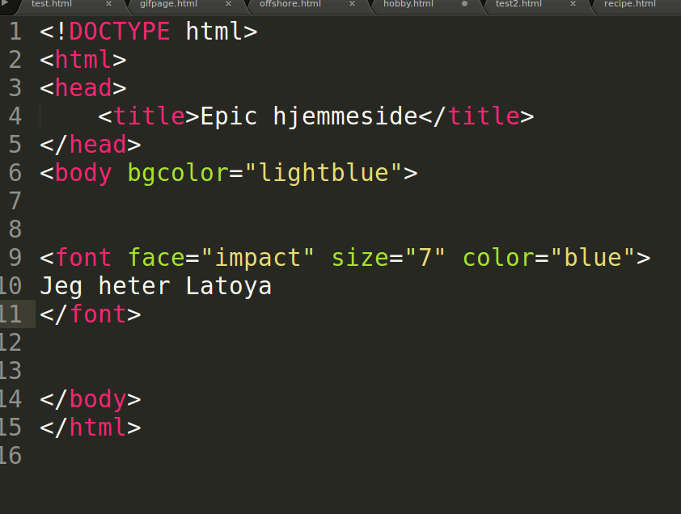

- Forann teksten din skriv < font face="impact" size="7" color=" blue"> Krokodille klemmene finner du mellom Shift og z på tastaturet Andre skrifttyper er Comic Sans Ms, Arial,Helvetica, Courier,Times New Roman, Verdana
Husk å skrive med små bokstaver.. 
- Husk å avslutte med < /font > etter teksten
- Lagre dokumentet , og oppdater hjemmesiden din i nettleseren for å se resultatet. Oppdatere gjør du ved å trykke F5 eller ↻